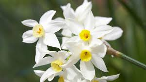

| tipos de flores | imagen | color de la flor | clase | ubicacion |
|---|---|---|---|---|
| gardenia | blanco | arbusto perenne | África, Asia, Madagascar y las islas del Pacífico | |
| dalia | rosa | plantas herbáceas | estado de Chihuahua hasta Colombia | |
| loto | blanca y rosa | Magnoliopsida | Liyue | |
| camelia | rosa | Magnoliopsida | Asia sudoriental, China y Japón | |
| narciso |  | blaca y amarilla | Amaryllidaceae | Asia Central y China. |